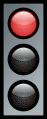

СВІТЛОФОР
Світлофо́р (контамінація світло і семафор) — пристрій оптичної сигналізації, призначений для регулювання руху людей, велосипедів, автомобілів і інших учасників дорожнього руху, потягів залізниці і метрополітену, річкових і морських суден.
Історія
Перший світлофор був встановлений 10 грудня 1868 року в Лондоні, біля будівлі Британського Парламенту, задовго до розповсюдження автомобілів. Його винахідник — Дж. П. Найт (англ. J. P. Knight) — був фахівцем із залізничних семафорів. Його винаходом керували вручну, пристрій мав два семафорні крила. Підняті горизонтально, вони означали сигнал «стоп», а опущені під кутом 45° — рух з обережністю. У темний час доби використовувався газовий ліхтар, що обертався, за допомогою нього відповідно подавалися сигнали червоного і зеленого кольорів. Світлофор використовувався для полегшення переходу пішоходів через вулицю, а його сигнали призначалися для гужових транспортних засобів. На жаль, 2 січня 1869 року газовий ліхтар світлофора вибухнув та поранив поліцейського, що керував ним.
Перша автоматична система світлофорів з перемиканням без безпосередньої участі людини була розроблена і запатентована в 1910 році Ернестом Сиріном (англ. Earnest Sirrine) з Чикаго. Його світлофор використовував написи «Stop» і «Proceed», але не підсвічувався.
Винахідником першого електричного світлофора мабуть може вважатися Лестер Вайр (Lester Wire) з Солт-Лейк-Сіті (штат Юта, США). У 1912 році він розробив (але не запатентував) світлофор з двома круглими електричними сигналами (червоного і зеленого кольору).
5 серпня 1914 року в Клівленді (штат Огайо, США) Американська світлофорна компанія (англ. American Traffic Signal Company) встановила на перехресті 105-ї вулиці і авеню Евкліда чотири електричні світлофори конструкції Джеймса Годжа (англ. James Hoge). Вони мали червоний і зелений сигнал і при перемиканні видавали звуковий сигнал. Системою керував поліцейський, який сидів у скляній будці на перехресті. Світлофори задавали правила руху, аналогічні до прийнятих у сучасній Америці: поворот направо здійснювався у будь-який час за відсутності перешкод, а поворот наліво — на зелений сигнал навколо центру перехрестя.
У 1920 році трибарвні світлофори з використанням жовтого сигналу були встановлені в Детройті (штат Мічиган, США) і Нью-Йорку. Авторами винаходів були поліцейський Вільям Потс (англ. William Potts) і Джон Ф. Гарріс (англ. John F. Harriss).
У Європі аналогічні світлофори були встановлені в 1922 році в Парижі на перетині вулиці Ріволі (фр. Rue de Rivoli) і Севастопольського бульвару (фр. Boulevard de Sebastopol), а також у Гамбурзі на площі Стефана (нім. Stephansplatz). А в Англії — в 1927 році в місті Вулвергемптон (англ. Wolverhampton).
В Польщі та Угорщині перші світлофори встановили у 1926 р., в Румунії — у 1933 р. У СРСР перший світлофор встановили 15 січня 1930 року в Ленінграді, на перетині проспектів Невського і Ливарного (рос. Литейний проспект). Перший світлофор у Москві з'явився 30 грудня того ж року на розі вулиць Петрівка (рос. Петровка) і Кузнецький Міст.
У зв'язку з історією світлофора часто згадують ім'я афроамериканського винахідника Гарета Моргана (англ. Garrett Morgan), що запатентував у 1922 році світлофор оригінальної конструкції. Існує стійкий міф про великий вплив Моргана на розвиток світлофорів, вважається, що його патент став основою монополії Дженерал Електрик (General Electric) на виробництво світлофорів у США. Але можливо він є лише одним з багатьох винахідників різноманітних світлофорів на початку XX століття.
Типи світлофорів
Вуличні і дорожні світлофори
Автомобільні світлофори
Найпоширеніші світлофори з сигналами (зазвичай круглими) /трьох кольорів: червоного , жовтого і зеленого . У деяких країнах замість жовтого використовується помаранчевий колір. Сигнали можуть бути розташовані як вертикально (при цьому червоний сигнал завжди розташовується зверху, а зелений — знизу), так і горизонтально (при цьому червоний сигнал завжди розташовується зліва, а зелений — справа). За відсутності інших, спеціальних світлофорів вони регулюють рух всіх видів транспортних засобів і пішоходів. Іноді сигнали світлофора доповнюють спеціальним табло зворотного відліку часу, який показує, скільки часу ще горітиме сигнал. Частіше за все табло зворотного відліку роблять для зеленого сигналу світлофора, але у ряді випадків табло відображає і решту часу для червоного сигналу.
Практично повсюдно червоний сигнал світлофора забороняє рух, жовтий забороняє виїзд на ділянку, що охороняється світлофором, але допускає завершення його проїзду, а зелений — дозволяє рух. Поширене, але не повсюдне використання поєднання червоного і жовтого сигналів, що позначає майбутнє включення зеленого сигналу. Іноді зелений сигнал включається відразу після червоного без проміжного жовтого, але не навпаки. Деталі застосування сигналів розрізняються залежно від прийнятих в тій або іншій країні Правил дорожнього руху.
снують світлофори з двох секцій — червоної і зеленої. Такі світлофори зазвичай встановлюються на пунктах, де пропуск автомобілів проводиться в індивідуальному порядку, наприклад, на прикордонних переходах, при в'їзді або виїзді з автостоянки, території, що охороняється тощо.
Можуть також подаватися миготливі сигнали, значення яких залежить від місцевого законодавства. В Україні і в багатьох країнах Європи миготливий зелений сигнал означає майбутнє перемикання до жовтого. Автомобілі, що наближаються до світлофора з миготливим зеленим сигналом, можуть прийняти заходи до своєчасного гальмування, аби уникнути виїзду на перехрестя, що охороняється світлофором, або переходу на заборонений сигнал. Миготливий жовтий сигнал вимагає понизити швидкість для проїзду перехрестя або означає на пішохідному переході нерегульований світлофор (наприклад, вночі, коли регулювання не потрібне через низьку інтенсивність руху). Іноді для цих цілей застосовуються спеціальні світлофори, що складаються з миготливої однієї або поперемінно миготливих двох жовтих секцій.
Стрілки і стрілочні секції
Додатково сигнали можуть бути подані у вигляді стрілок (контурів стрілок). Крім того, часто використовуються додаткові секції із стрілками, які регулюють рух у тому чи іншому напрямі.
Світлофор із мигаючим червоним сигналом
Червоний миготливий сигнал (як правило, на світлофорах з миготливою однією або поперемінно миготливими двома червоними секціями) використовується для огородження перетинів з трамвайними лініями при наближенні трамвая, мостів при розводці, ділянок дороги поблизу злітно-посадочних смуг аеропортів при зльоті і посадці літаків на небезпечній висоті. Ці світлофори аналогічні тим, що використовуються на залізничних переїздах.
Світлофори на залізничних переїздах
Складається з двох горизонтально розташованих червоних ліхтарів і, на деяких переїздах, одного ліхтаря місячно-білого кольору. Білий ліхтар розташований між червоними, нижче або вище лінії, що сполучає їх.
Значення сигналів наступне:
- два поперемінно миготливих червоних ліхтарів — рух через переїзд заборонений; даний сигнал зазвичай супроводжується звуковою сигналізацією (дзвінком);
- миготливий білий ліхтар означає, що технічна система переїзду знаходиться у нормальному стані. Оскільки він не горить, коли переїзд закритий або закривається, біло-місячний ліхтар часто неправильно вважають сигналом, що дозволяє рух.
Реверсійний світлофор
Для регулювання руху по смугах проїжджої частини (особливо там, де можливий реверсивний рух), застосовують спеціальні світлофори контролю смуги (реверсивні). Відповідно до Віденської конвенції про дорожні знаки і сигнали такі світлофори можуть мати два або три сигнали:
- червоний Х-подібний сигнал забороняє рух по смузі;
- зелена стрілка, направлена вниз, дозволяє рух;
- додатковий сигнал у вигляді діагональної жовтої стрілки інформує про зміну режиму роботи смуги і вказує напрям, в якому її необхідно покинути.
Додаткові інтерфейси
У деяких країнах світлофори забезпечуються додатковою цифровою панеллю, що показує, скільки секунд залишилося до зміни статусу світлофора. В Україні такі світлофори поширені.
Один з шляхів підвищення ефективності світлофора — пристосування його для використання сліпими людьми. В умовах, коли необхідна підвищена увага, такі доповнення виявляються корисними і для звичайних людей.
Такий звуковий супровід, що спрацьовує при зміні кольорів: повільне цокання («чекай») або швидке цокання («йди»).
У Німеччині та Нідерландах майданчик перед пішохідним переходом викладений ребристими плитками і м'якими гумовими пластинками, наступаючи на яких нога трохи просідає, і людина мимоволі зупиняється.